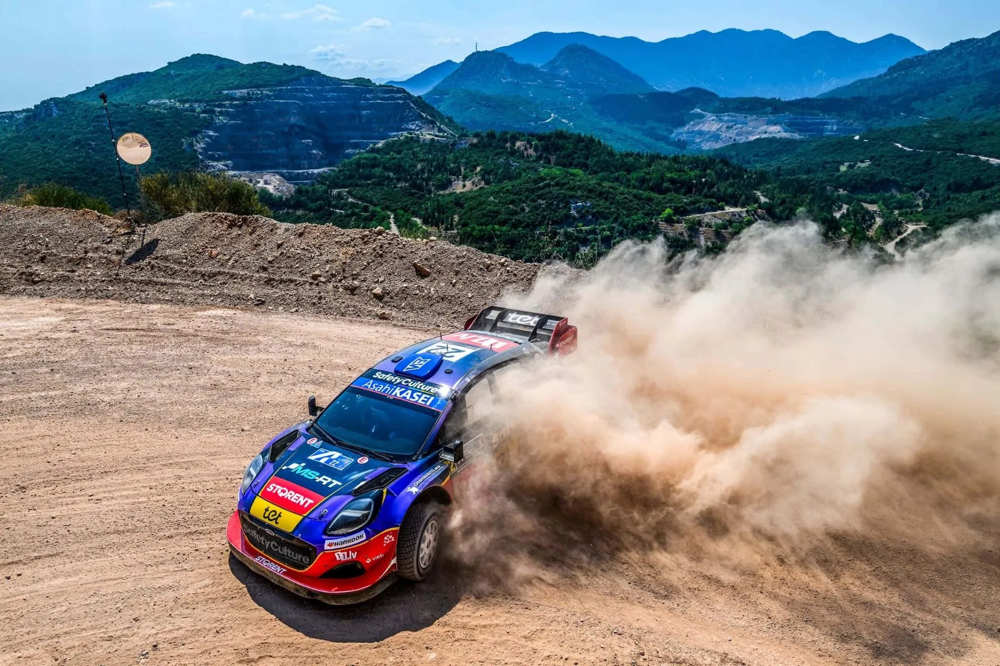
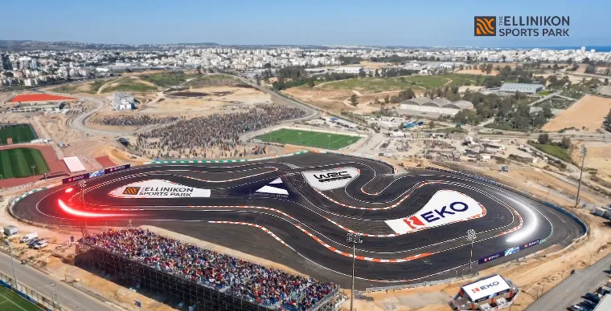
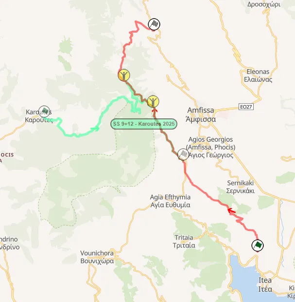
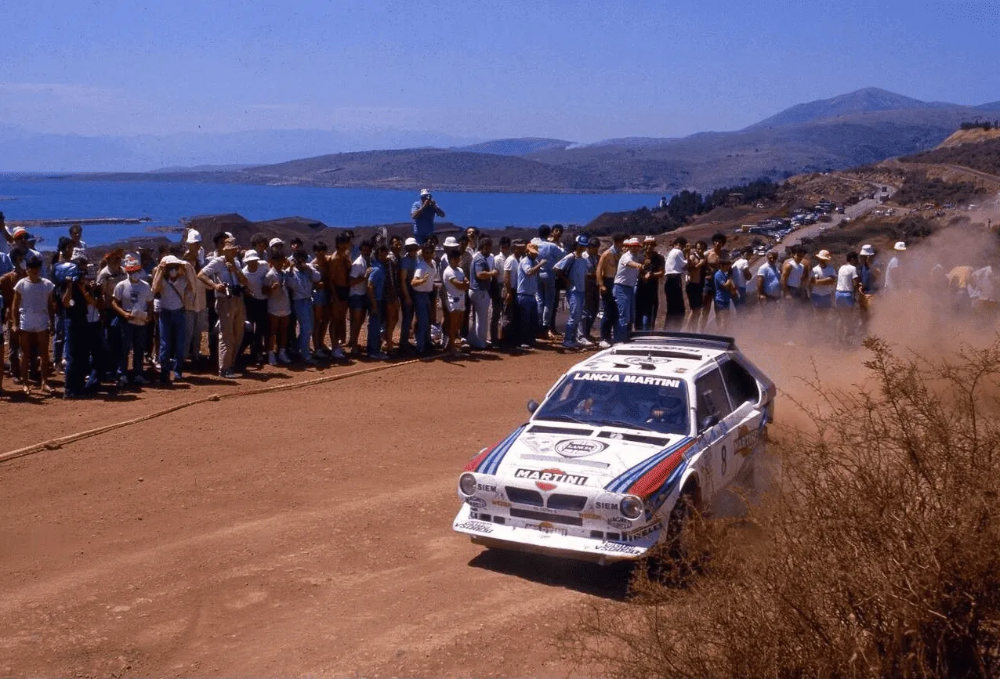
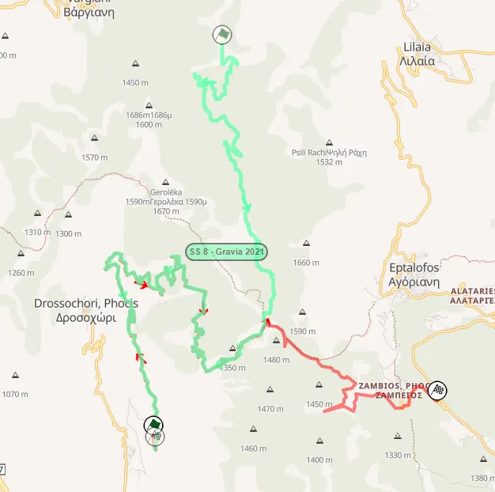
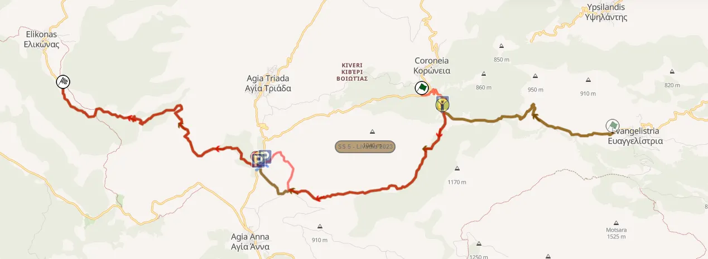
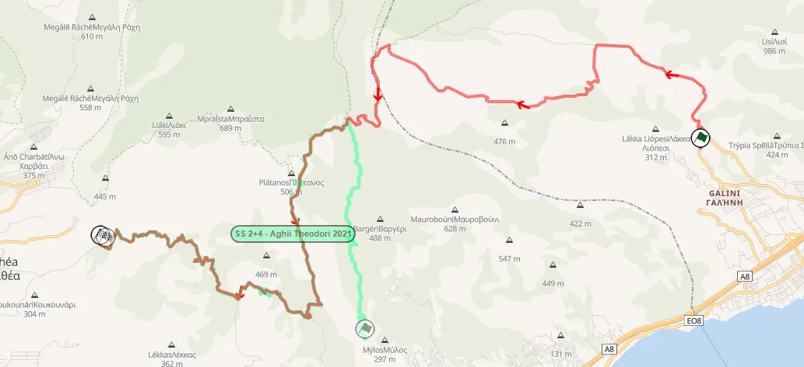
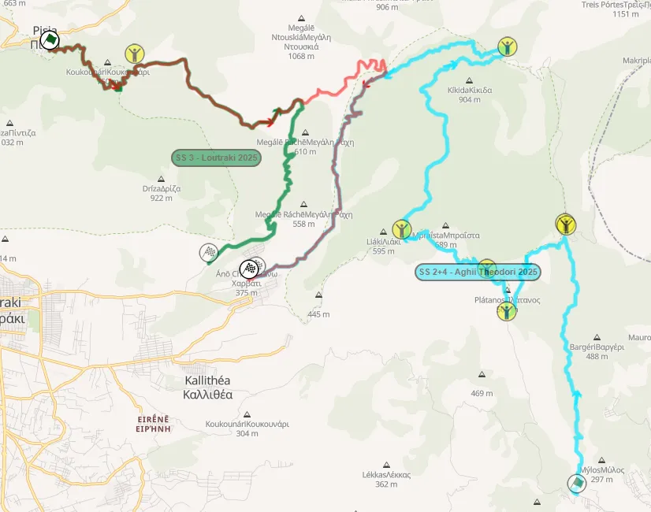

Acropolis Rally 2026: Route Preview
Thumbnail: @ World
Stage Maps: Rally-Maps.com
Acropolis Rally 2026 maps Rally Portugal 2026 stages Rally Portugal 2026
Τhe Acropolis Rally returns to the Peloponnese for its 70th running, with the rally's base being in Loutraki. Most of the rally's route is new, with only one stage remaining unchanged compared to 2025. The event organisers will make use of a ferry boat to take the cars from Corinth to Itea on Thursday night.
Thursday
Thursday features the pre-event Shakedown, as well as the rally's opening stage: a head-to-head SSS in Hellinikon. Following that, the crews will head to Corinth, from where they'll take the ferry to Itea. This is the first time a ferry boat will be used in the rally since 1991.
Shakedown: Loutraki - 3.34km
Changes compared to past editions: The stage was last used in 2013 as the rally's Shakedown. This year it will be run in the reverse direction. Since then it's been frequently used as a PET stage for the teams.
Stage description: The start of the stage is high-speed but technical, featuring a mix of fast and flowing stretches, as well as some technical sections with consecutive slow corners. At 2km there's a series of crests, after which the Shakedown passes through a village. The end of the test is high-speed, in a narrow and rutted road. Most of the stage has been badly affected by wildfires, with most of the flaura being burnt, the stage now looking a lot more empty than the last time it was in the itinerary.
SSS1 EKO SSS - 1.86km
Changes compared to past editions: Brand new SSS in the south of Athens.

Stage description: : This year's Acropolis Rally Super Special Stage takes place in Hellinikon. The asphalt test is in a head-to-head format, with two crews racing side by side in a direct battle to determine the winner of this unofficial duel.
The stage is highly technical, featuring numerous long-radius corners, as well as a section where the cars will pass over and under each other through a tunnel/bridge complex, similar to the Super Special Stages previously held at the Olympic Stadium.
Friday
Friday is the longest day of the rally, with 129km of action. There is only one repeated stage - SS Stiri. The rally heads from Itea to Loutraki, a reverse of the usual Friday format.
SS2 Bauxites - 22.97km
Changes compared to past editions: Returns for the first time since 2022. Parts of the test were used in reverse in 2023 and 2025 as part of SS Karoutes.

The route of this year's Bauxites stage route (red) compared to last year's (green)
Stage description: Bauxites is an iconic Acropolis stage. First used in 1980, the uphill climb that has the Itea gulf as a backdrop has been featured a further 22 times in the rally's itinerary. The stage takes its name from the Bauxite mineral which is mined in the area, and gives the stage its red-ish coloured gravel.

A Lancia Delta S4 climbing the Bauxite Way road in 1986
unknown
The start is very rough and uphill, with a mix of hairpins and generally high-speed sections. At 8.28km there's a short pass on tarmac, after which the stage joins the Prosilio road, which was used as part of SS Karoutes last year, only in reverse.
There, it becomes smoother, being initially twisty and technical on a wide road. At 13.6km the road becomes narrower as the stage enters the forest. After a nice flowing section, it becomes technical as it heads downhill to the stage's finish. That part is rougher, with more bedrock exposed on the route's surface. Oliver Solberg crashed here in 2021.
SS3 Parnassos Mt - 22.28km
Changes compared to past editions: New stage name, but this is just the 2012 Drossohori test. It uses sections last used in SS Gravia in 2021, only in reverse.

Parnassos Mt's route (red) compared to the 2021 Gravia test (green)
Stage description: Parnassos starts off on a medium wide road that is flowing and features steep drops.
After a long straight, from 5km onwards, the stage becomes sinuous, with many hairpins and slow corners. A more high-speed section interrupts the series of slow corners at 10.33km, but it's only short lived, as from 11.62 to 13.2km it's all just uphill hairpins!
After that the test becomes faster and more flowing, with a fast downhill section beginning from 15.6km. At 19km. following a tight hairpin, the stage becomes wide and flowing, with the end of the stage being used for pre-event testing by many teams since 2021.
SS4/6 Stiri - 24.18km
Changes compared to past editions: It's the only stage in this year's rally to remain unchanged compared to last year.
Stage description: The start of the stage is on a windmill farm, on a medium wide and smooth road, climbing up the mountain with fast sections that are connected by hairpins. It joins the older route at 7.7km, and shortly after it becomes narrower and rougher. At 15.2km there's a small open plateau, after which the stage becomes very rocky, and also technical, with a tricky hairpin also at 19.96km
Shortly after the stage reaches its highest altitude at 20.55km, and turns downhill. A series of technical downhill hairpins follow, with steep drops on the outside. The ending of the stage is on a fast, but also narrow and rough road.
SS5 Elikon Mt - 17.80km
Changes compared to past editions: The name Elikonas returns to the Acropolis itinerary for the first time since 2012, but in reality it's just SS Livadia from 2022 and 2023, with a new start.

Elikonas' route (red) compared to the 2023 Livadia test (brown)
Stage description: The start of the stage is on tarmac, with the route quickly joining a gravel road for a series of hairpins. At 1.64km it joins the route of the Livadia stage, becoming narrow and very rough. There's a pass through two marble quarries at 4.50km and 6km, with a big jump at 5.20km.
For this year, the stage won't pass next to the power station, instead heading uphill on a new road created for servicing the wind turbines nearby. It quickly heads downhill after that, meeting the classic Elikonas road at 9.5km after a tarmac hairpin.
There, the stage becomes wider, faster and more flowing, featuring medium to high-speed corners almost to its entirety.
SS7 Thiva - 17.81km
Changes compared to past editions: This year's configuration of Thiva mixes together the start from 2025, with 2024's ending.
Stage description: Thiva is a stage that has an exceptional amount of character changes and uses a great deal of different roads, as the stage itself passes through a hill with numerous trails. It utilises a variety of rough, and relatively smooth sections.
The start is on a sandy and technical road, that has a jump just before the stage joins a different road.
A mostly fast section follows, with a jump at 5.58km, after which the stage joins a new, narrower and rougher road. The rest of the stage is now located within the Moschopodi trails and features numerous surface changes as it frequently switches between different roads, ranging from sandy to harder and rockier.
Between 7.67 km and 12.95 km, the stage becomes twisty and technical, reaching a well-known spectator spot marked by a hairpin turn.
From then on, it mostly follows the route of the 2024 stage, featuring a mix of wider and narrow roads, being mostly twisty. The end of the stage is quite high-speed, with three small crests just before the finish.
Saturday
Saturday can be considered a day that is completely brand new. SS Kefalari is the only test that has been used in the same format, with all the others either being completely new, or in a new configuration. There's four stages, but only two of which are repeated, due to the massive liasions.
SS8/12: Ghymno - 19.60km
Changes compared to past editions: Used for the first time since 2013, albeit extended from the end, and in reverse. The stage is in the DiRT Rally game series.
Stage description: The start of the stage is on a concrete road that turns into gravel. It is uphill, and is bumpy and technical, with many slow corners on a narrow road. At about 2.4km, the stage remains rough, but becomes more flowing, while being predominantly medium-speed. It is initially uphill, but from 6km onwards it becomes downhill, with a very fast descent starting from 10.3km.
Following that, from 13km until the finish, the test is full of hairpins, heading down the mountain. Unlike previous editions, the finish is after a tarmac section, that also contains downhill hairpins.
SS9 Kolines - 21.30km
Changes compared to past editions: Brand new stage, never used before in the Acropolis Rally. Dani Sordo had his PET here in 2009.
Stage description: Kolines is a brand new stage, which marks the first instance of an Acropolis stage in Arkadia since 1985! Parts of it were used in the 2007 Mavro Rodo Rally, and has never been used before in the Acropolis.
It starts off with a very twisty section inside the forest, with the road surface being quite sandy. The stage has a small high-speed section from 4.51 to 6km, after which there's a watersplash at 6.7km.
After that the test is sinuous and slow, in a section that has been compared to something from Rally de Portugal, remaining like this for the next 10 kilometers.
From 17km onwards, the stage becomes high-speed, with a big watersplash at 17.96km. After that it exits the forest, where it continues to be high-speed on an open area.
SS10/13 Menalo Mt - 14.78km
Changes compared to past editions: Another brand new stage never used before in the Acropolis. Sebastien Loeb had his PET here in 2009.
Stage description: Menalo is a brand new stage that has never been used in any rally before. It starts off with a flowing section on a wide road in a forest, before a long straight that lasts for almost a kilometer!
Following that, the stage becomes ever so slightly more technical, remaining fast, and also passing through a plateau at 9km.
From 10.73 to 11.25km there's a short tarmac section that is downhill and twisty, but fast, after which the route joins a sort of Mickey Mouse arena, where the stage becomes twisty, mostly on an open plateau, with the sections inside the forest being tricky and narrow.
SS11: Kefalari - 18.17km
Changes compared to past editions: Another returning stage, used in an almost identical configuration to 2013.
Stage description: The start of the stage is on a twisty and narrow uphill road, that features a big drop on the right hand side. It features the corner where Dani Sordo and Henning Solberg hit the same rock in 2009.
A beautiful high-speed section follows, which is on an open plateau, with spectators being able to see the cars for a long time. The stage re-enters the forest afterwards, with the next 6.5km being on a twisty and narrow road, that can get quite rough with bedrock appearing. The surface is also more clayey and loose.
The rest of the stage is more flowing, with the road being slightly wider, heading downhill, with medium-speed to fast sections.
Sunday
Sunday features two repeated stages in the Loutraki area. Aghii Theodori shares almost no roads compared to last year, essentially using the same route as the 2012 and 2013 Kineta stage, and Loutraki featuring a different finish.
SS14/16 Aghii Theodori - 25.39km
Changes compared to past editions: The Kineta road returns for the first time since 2013, and the stage then continues onto the 2021 Aghii Theodori route. Identical to the 2012 and 2013 versions of the Kineta stage.

This year's Aghii Theodori route (red) compared to the 2021 edition of the test (green)
Stage description: The stage starts on a narrow and technical road that features some concrete patches. At 1.54km it joins a wider and smoother road that is fast and flowing, and features a series of crests.
At 3.84km the stage joins a narrow and rough road that is uphill. It is mostly high-speed with the exception of a series of twisty corners at 4.63km.
Following that, it rejoins the wide road at 9.78km, for a high-speed downhill section, using parts of a firebreak. After a twisty section on a narrower road that is very rough, with a lot of exposed bedrock, the stage joins the tarmac at 14km. There, it becomes very fast, until a series of downhill hairpins starting from 17.1km, after which it joins a gravel road.
This section hasn't been used since 2022, and it's very twisty and technical, becoming exceptionally sinuous after 20km, featuring hairpins and slow corners almost exclusively.
SS15/17 Loutraki - 16.61km
Changes compared to past editions: Has the same start as last year, but uses the finish of last year's Aghii Theodori stage. Essentially 2023's SS Pissia.

Loutraki's route (red) compared to the 2025 Loutraki (green) and the 2025 Aghii Theodori (blue)
Stage description: The stage is initially technical and twisty for the first three kilometres, before becoming more fast and flowing. At about 9km, the stage again becomes twisty, with a series of hairpins, after which it joins last year's Aghii Theodori stage route.
Though initially twisty, the road becomes a lot faster after 12.4km with a flat-out stretch following, on a road that is narrow and rough. This part of the stage can get very rutted.
After passing through a dried up river at 13.69, the watersplash where Nasser Al-Attiyah went flying into the trees in 2012, the stage continues to be high-speed and rough until the finish.


Comments